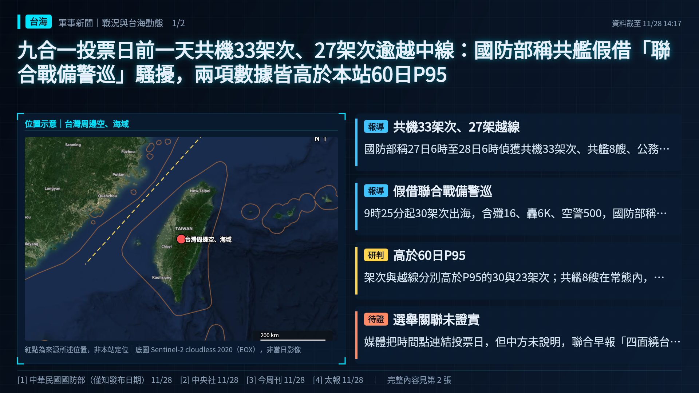
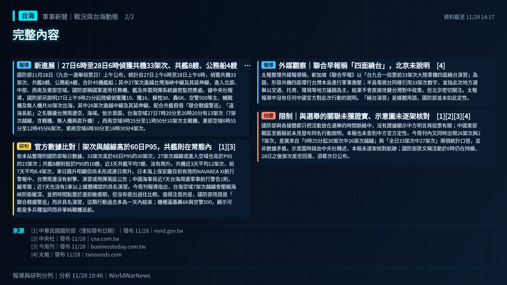

九合一投票日前一天共機33架次、27架次逾越中線：國防部稱共艦假借「聯合戰備警巡」騷擾，兩項數據皆高於本站60日P95


報導新進展｜27日6時至28日6時偵獲共機33架次、共艦8艘、公務船4艘
國防部11月28日（九合一選舉投票日）上午公布，統計自27日上午6時至28日上午6時，偵獲共機33架次、共艦8艘、公務船4艘，合計45機艦船；其中27架次逾越台灣海峽中線及其延伸線，進入北部、中部、西南及東部空域。國防部稱國軍運用任務機、艦及岸置飛彈系統嚴密監控應處。據中央社報導，國防部另說明27日上午9時25分起陸續偵獲殲10、殲16、蘇愷30、轟6K、空警500等主、輔戰機及無人機共30架次出海，其中26架次逾越中線及其延伸線，配合共艦假借「聯合戰備警巡」「遠海長航」之名騷擾台灣周邊空、海域。依示意圖，台海空域27日7時20分至20時20分有13架次（7架次越線，含戰機、無人機與直升機），西南空域9時25分至11時50分10架次主戰機，東部空域6時55分至12時45分6架次，東南空域6時30分至18時30分4架次。
研判官方數據比對｜架次與越線高於60日P95，共艦則在常態內
依本站整理的國防部每日數據，33架次高於60日P95的30架次，27架次越線或進入空域也高於P95的23架次；共艦8艘則低於P95的10艘，近3天共艦平均7艘、沒有爬升。共機近3天平均12架次、前7天平均6.4架次，單日跳升明顯但尚未形成連日爬升。日本海上保安廳目前有效的NAVAREA XI航行警報中，台灣周邊沒有射擊、演習或飛彈落區公告；中國海事局近7天台海周邊軍事航行警告1則，屬常態；近7天也沒有2家以上媒體確認的具名演習。今周刊報導指出，台海空域7架次越線會壓縮海峽防衛縱深，並把時間點置於選前敏感期，但沒有提出過往比較。值得注意的是，國防部用語是「聯合戰備警巡」而非具名演習，這類行動過去多為一天內結束；機種涵蓋轟6K與空警500，顯示可能是多兵種協同而非單純戰機巡航。
報導外媒觀察｜聯合早報稱「四面繞台」，北京未說明
太報整理外媒報導稱，新加坡《聯合早報》以「台九合一投票前33架次大陸軍機四面繞台演習」為題，形容共機四面環行台灣本島進行軍事施壓；半島電視台同樣引用33架次數字，並指此次地方選舉以交通、托育、環境等地方議題為主，結果不會直接改變台灣對中政策，但北京密切關注。太報報導中沒有任何中國官方對此次行動的說明。「繞台演習」是媒體用語，國防部並未如此定性。
待證限制｜與選舉的關聯未獲證實、示意圖未逐架核對
國防部與各媒體都只把活動放在選舉的時間脈絡中，沒有證據顯示中方明言與投票有關；中國東部戰區至截稿前未見發布同名行動說明，本稿也未查到中方官方定性。今周刊內文同時出現26架次與27架次，差異來自「9時25分起30架次中26架次越線」與「全日33架次中27架次」兩個統計口徑，並非數據矛盾。示意圖時段由中央社轉述，本稿未逐架核對航跡；國防部原文稱活動於6時仍在持續，28日之後架次是否回落，須看次日公布。
- [1] 中華民國國防部（僅知發布日期）｜發布 11/28
- [2] 中央社｜發布 11/28
- [3] 今周刊｜發布 11/28
- [4] 太報｜發布 11/28